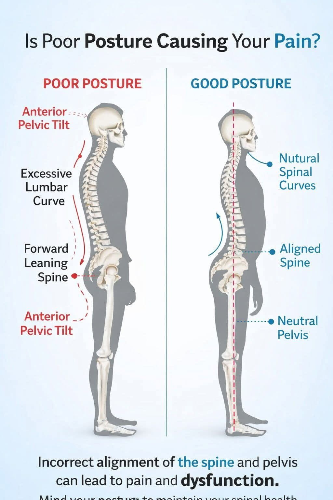
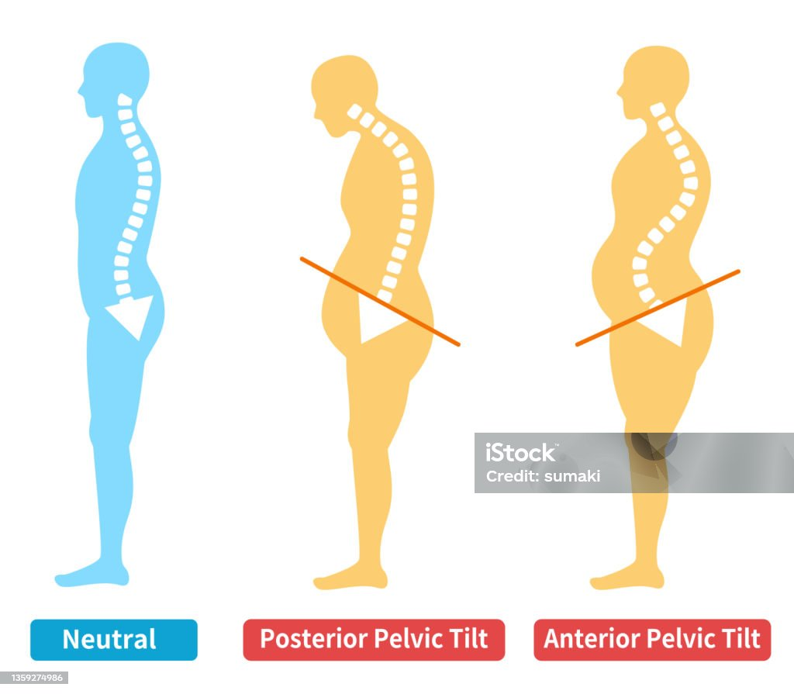
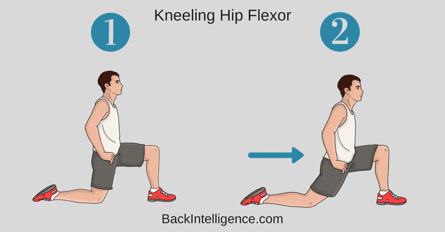
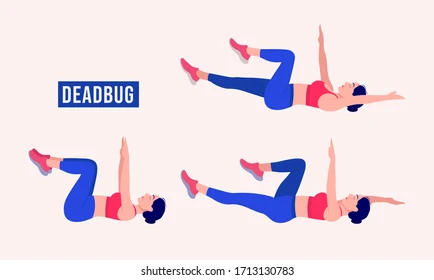
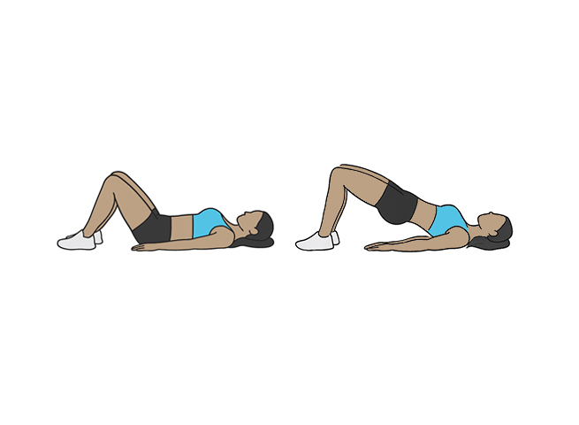
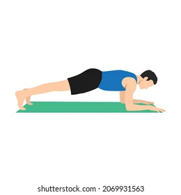
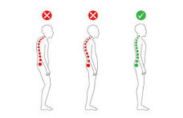

Forge Protocol · Movement
The plan works — but the honest version is less absolute than the fitness industry sells.
The pattern & the fix
Same body, two stacks. On the left the ear, ribs and belt-line drift forward of the plumb line; the low back arches to compensate. On the right they stack on the line. The gold arrows are the four corrections you'll drill.

images/posture-anterior-vs-neutral.jpgHow this works
The pattern has two sides, and fixing one without the other doesn't hold. Some things are short and pulling you into the tilt; some things are weak and not holding you out of it. You lengthen the first set and teach the second set to own a neutral pelvis under load — then you rehearse the position until it's your default.

images/pelvic-tilt.jpgBlock 01 · Length
Short hip flexors are the main culprit; lats feed the rib-flare and forward head. Length is the smaller half of the job — don't over-invest here.

images/hip-flexor-stretch.jpgBlock 02 · Strength & control
This is the bigger half. The point isn't "do ab work" — it's owning the stacked position while something tries to pull you out of it.

images/dead-bug.jpg
images/glute-bridge.jpg
images/forearm-plank.jpgAdding load later? Hip thrusts and RDLs done with control train the same neutral-pelvis skill under real weight.
Block 03 · The standing skill
This is the piece most people skip, and it's the one that changes what you see in the mirror. No stretch makes you stand well — reps of standing well do.

images/standing-posture.jpgPutting it on the week
When it gets easy
Dead bug → slow it further / add end-range holds → light weight in the hands.control first
Glute bridge → single-leg → loaded hip thrust.
Anti-extension hold → longer holds → longer lever (extend the reach) → add a reach or drag.
Standing skill doesn't "progress" — it compounds. The win is when you catch yourself already stacked without cueing it.
If you keep one thing
Stretching and strengthening set the table, but the thing that changes how you look standing in a mirror is standing well, on purpose, many times a day — until it stops being a pose and becomes the default.
If this pattern ever produces actual low-back pain — not just the look of it — that's the point to get a hands-on assessment from a physio rather than self-programming. Everything above is for the look and the movement, not for treating pain.
Drill · run the session